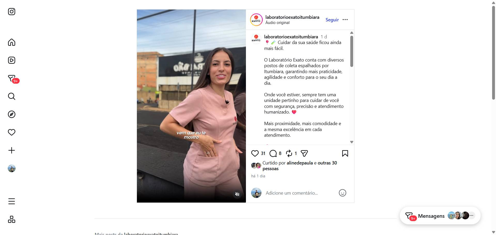
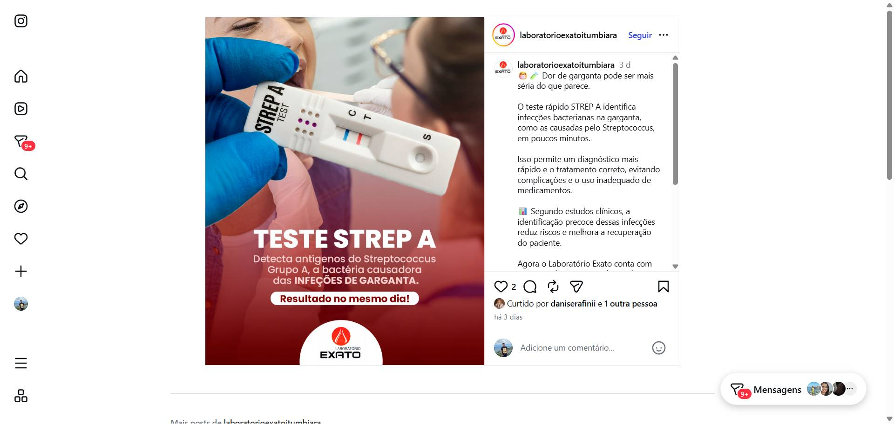
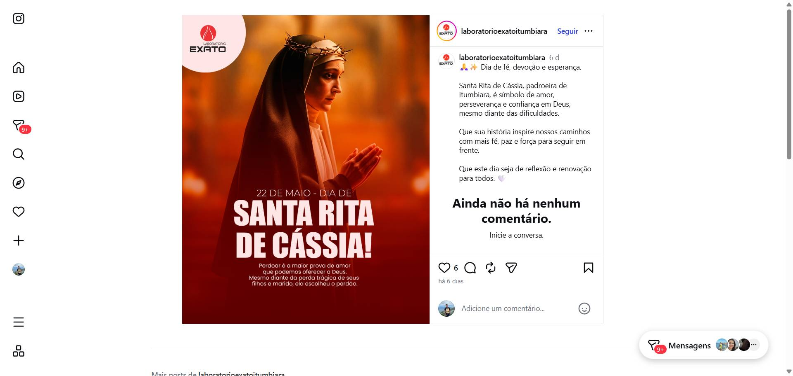
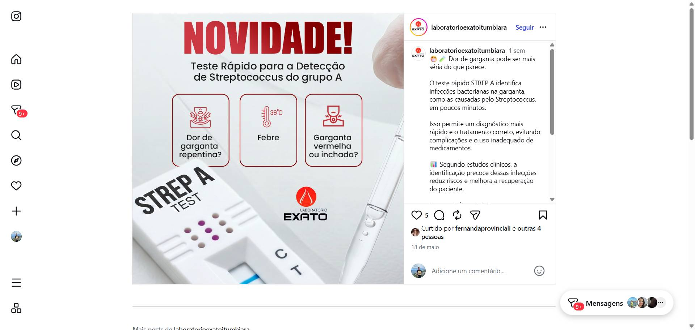
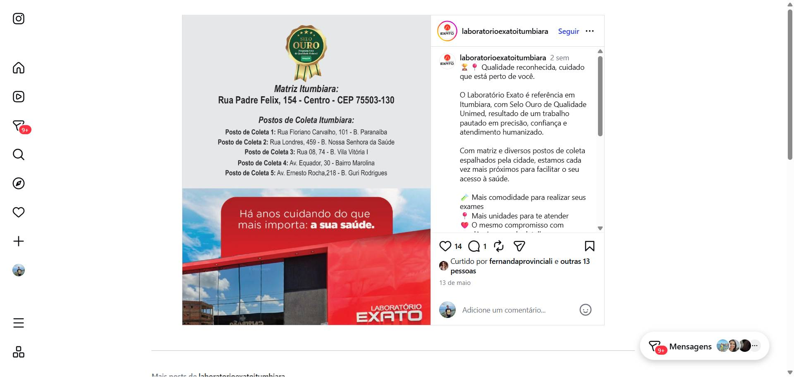

A Digital AI coloca um Agente de IA no WhatsApp do Exato para agendar exames, responder dúvidas e confirmar coletas 24 horas por dia — sem contratar mais ninguém na recepção.
Fernanda, acompanhamos o Instagram de vocês — e vimos aquele post sobre os postos espalhados por Itumbiara: "onde você estiver, tem uma unidade pertinho para cuidar de você". Essa capilaridade é um diferencial real. 6 unidades operando ao mesmo tempo é uma estrutura que poucos laboratórios da cidade têm.
Mas coordenar atendimento em 6 frentes, com horário limitado e 100% das dúvidas passando pelo WhatsApp manual — isso cria uma pressão invisível. O Laboratório Exato existe há 47 anos porque soube cuidar dos pacientes certo. A questão agora é: como garantir que nenhum paciente seja perdido só porque tentou agendar às 20h e não teve resposta?





Jejum, horários, convênios, prazo de resultado. Dezenas de vezes por dia — ocupando tempo que deveria ir para o atendimento presencial.
O laboratório fecha às 18h. 33% dos agendamentos acontecem fora do horário comercial — e a maioria fecha com outra clínica antes de você abrir.
Unimed Lab, Lab. CAPC e Lab. Modelo têm presença digital. O Exato depende quase só do boca a boca — tradição não aparece no Google.
Sem confirmação automática no dia anterior, coletas são canceladas e pacientes frustrados — toda semana nos 6 postos.
Agenda exames e coletas domiciliares diretamente, qualquer hora do dia ou da noite.
Jejum, horários de cada posto, convênios, prazo de resultado — tudo em segundos.
Avisa o paciente no dia anterior com instruções corretas — reduz cancelamentos em até 60%.
Notifica e envia o link de acesso online — zero ligações perguntando "saiu meu resultado?".
Casos complexos são transferidos para sua equipe. O Agente sabe a hora de passar o bastão.
É um Agente de IA treinado com as informações reais do Laboratório Exato — convênios, horários de cada unidade, exames, coleta domiciliar — que conversa pelo WhatsApp como se fosse um colaborador que sabe tudo e nunca dorme.
Tudo isso sem substituir sua equipe. Liberando-a para o atendimento presencial que exige cuidado humano real.
Quero ver ao vivoDo primeiro contato até o Agente operando no WhatsApp do Exato.
Mapeamos horários de cada posto, convênios, exames e fluxo de agendamento. Tudo vira conhecimento do Agente. Semana 1.
Desenvolvemos o Agente com a identidade do Exato — linguagem, tom e informações reais. Testamos antes de ativar. Semanas 2–3.
O Agente entra no mesmo número que os pacientes já conhecem. Sua equipe acompanha em painel simples. Semana 4.
| Benefício | Impacto Esperado |
|---|---|
| Agendamentos 24/7 | Captura pacientes fora do horário — potencial de +15% a +25% no volume |
| Redução de no-show | Confirmação automática com instruções de preparo reduz cancelamentos em até 60% |
| Liberação da recepção | 60%–80% das dúvidas repetitivas resolvidas automaticamente |
| Cobertura de 6 postos | Um único Agente responde por todos os postos simultaneamente |
| Pacientes informados | Menos ligações "saiu meu resultado?" — o Agente avisa automaticamente |
| Vantagem competitiva | O Exato passa a ter o mesmo atendimento digital que o Unimed Lab |
"A gente não imaginou que ia ser tão simples. Os pacientes adoraram porque respondem no próprio WhatsApp, na hora que querem. E nossa equipe finalmente parou de repetir as mesmas respostas o dia inteiro."
Seus exames, convênios, horários e linguagem. O paciente percebe a diferença.
Estamos na mesma cidade. Qualquer ajuste é resolvido com quem conhece a operação local.
O Agente opera no mesmo número que seus pacientes já têm salvo. Zero atrito na adoção.
Acompanhamos, ajustamos e medimos os resultados junto com vocês.
8h/dia, 5 dias vs 24h, 7 dias por semana — por uma fração do custo.
O mesmo nível que grandes redes de saúde usam — adaptado para Itumbiara.
Demonstração ao vivo pelo WhatsApp — você vê o Agente respondendo como o Laboratório Exato, com informações reais. Sem compromisso. Sem reunião longa.
Quero ver a demonstração →